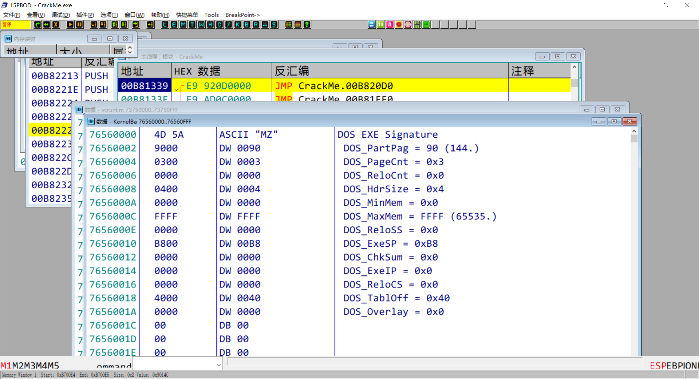

第一天内容复习
一、逆向的目的是什么
- 分析逻辑和数据结构（游戏分析）
- 为一个没有源码的程序添加功能或修复漏洞（打补丁）
二、逆向的岗位有哪一些
- 逆向破解程序。（没有岗位）
- 逆向分析恶意代码（安全研究员）
- 协议分析 ——– 密码学、移动端
- 二进制代码审计（漏洞利用\挖掘）
- 竞品分析 ——– 分析友商的程序，重现或者写出更厉害的功能
- 游戏安全、免杀、内核安全
三、安全工具的使用
- 十六进制编辑器： 010Editor WinHex UltraEdit
- PE 工具： LORDPE PEID EXEINFO DIE | Depends | Resource Hacker
- 抓包工具: WarkShark(内核) WSExplorer(应用层 Socket API HOOK )
- 行为监控：火绒剑（看进程行为，进程树， 文件操作，注册表操作，内核信息查看）
- ARK：用于检测拥有较高权限且能够隐藏自身的木马程序的工具
- PCHUNTER 火绒剑（常见的 ARK 工具都被加了特征码）
- 数据搜索工具： CheatEngine，通常用于分析游戏的数据和相关的操作
OllyDbg的使用
一、使用OD调试程序的几种方式
在菜单栏点击 -> 文件 -> 打开调试目标程序，可以设置命令行参数
1
2
3
4
5
6
7
8
9
10
11
// main 函数的另外一种接收命令行参数的标准写法
int main(int argc, char* argv[])
{
// 第一个参数就是当前应用程序的路径，其余的附加参数保存在后面
for (int i = 0; i < argc; ++i)
printf("[%d]: %s\n", i, argv[i]);
return 0;
}通过菜单 -> 文件 -> 附加，附加到一个正在运行的程序上。
将 OllyDbg 设置为当前操作系统的实时调试器（程序崩溃时的默认调试器）。
- 通过菜单 -> 设置 -> 实时调试器 -> 将OllyDbg 设置为实时调试器。
最常见的是使用发送到将应用程序交给 OD 进行调试。在文件管理器输入 shell:sendto
DLL调试，OD 的根目录下存在一个叫做 LoadDll.exe 的文件,当将一个 DLL 拖拽到 OD 中时,就会使用这个exe加载 DLL 文件,并且自动断到 dllMain 处,再进行调试.[操作系统提供了一个类似的 exe 叫做 rundll32.exe 经常会被恶意程序进行白利用].
二、认识OD的界面
OD主界面中的工具栏
L：日志窗口，查看调试过程中的信息
E：模块窗口，保存了模块相关的信息
M：应用程序的内存布局窗口，通常查看区段信息

T：线程信息窗口，可以操作线程

W：窗口信息，可以获取窗口的标题等，方便进行逆向分析
H：内核句柄窗口，没什么使用意义
C：CPU窗口，显示指令和内存等，是调试的主窗口
/：补丁窗口，显示当前所有对应用的修改
K ：调用堆栈，逆向的时候使用的非常多，用于进行栈回溯查找关键代码

B：断点窗口，可以查看和操作断点
R： 查找参考，查找当前的指令被哪一些地方调用了，在IDA中叫做（交叉引用）
… ： RUN跟踪，脱壳的时候会用到，会模拟执行并记录每一行代码的执行结果
三、OD提供的相关功能
查看内存信息 - 支持两种编码
通过数据窗口查看函数地址和名称
指定PE文件，主要用于查看内存中的PE文件（没有对应磁盘文件的），用于DUMP
通过在内存窗口双击PE文件头也可以解析一个PE文件

查找数据：查找名称(导入导出函数)
查找指令(序列)：通过 ctrl+S ctrl+F ctrl+L
二进制查找：用于查找特征值
查找模块间的调用
查找用户定义的注释. 用户的注释不应该写在堆空间
OD 提供的自动分析功能 - 汇编代码界面,如果没有自动识别,应该通过 ctrl+a 进行识别
OD 提供的自动分析功能 -堆栈界面
对应用程序执行修改之后,可以通过菜单中的补丁功能保存修改
假定参数：使用假定参数设置消息断点
分析程序的方法
- 字符串搜索找到关键点
- 通过关键函数进行栈回溯找到关键点